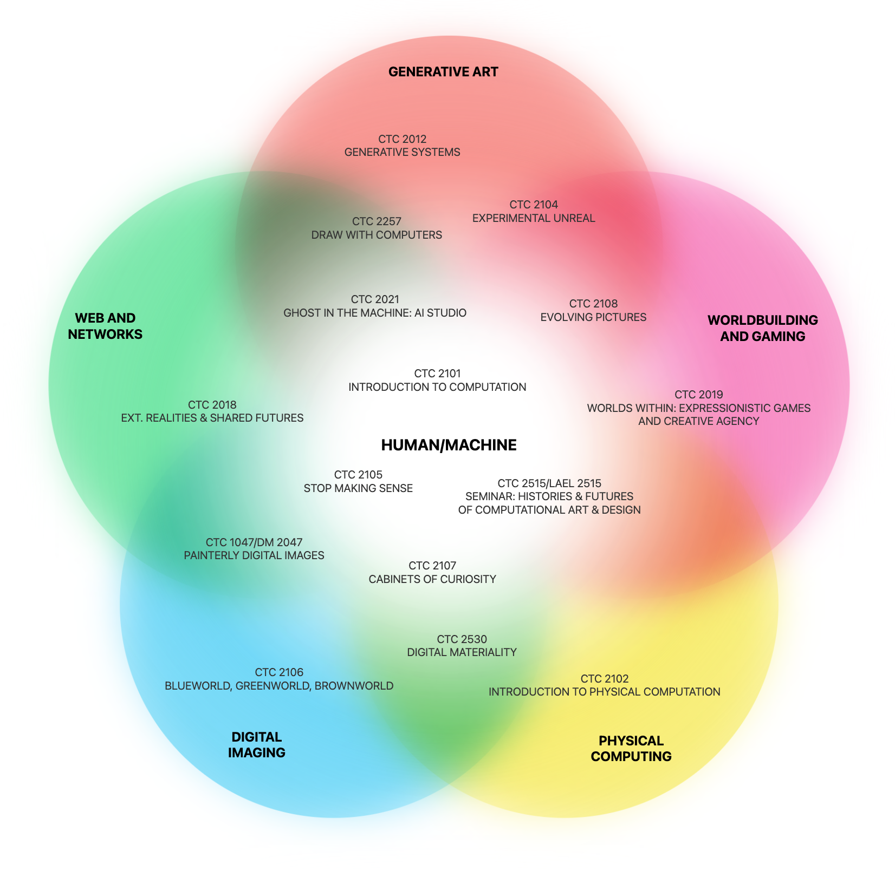

Pathways
Art & Computation offers multiple pathways through the curriculum. This diagram shows how different courses map onto the department's current focus areas. At the center of everything we do is the relationship between humans and computers.
Five Focus Areas
The pathways diagram visualizes how our curriculum connects across five core areas:
- Generative Art
- Worldbuilding and Gaming
- Physical Computing
- Digital Imaging
- Web and Networks
These focus areas can change over time depending on student interest and faculty work.
Multiple Paths
These aren't rigid tracks—they're overlapping territories. Most courses touch multiple areas. Your electives and independent projects let you emphasize certain territories over others, or forge your own hybrid approach.
The curriculum's flexibility means you define your own pathway through these territories.